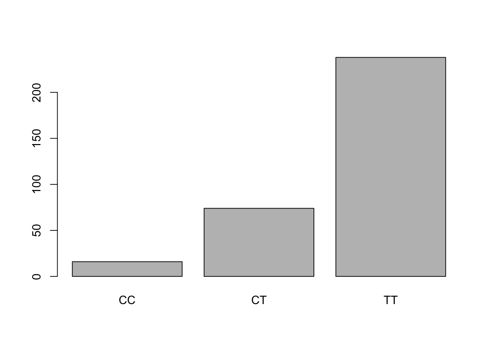
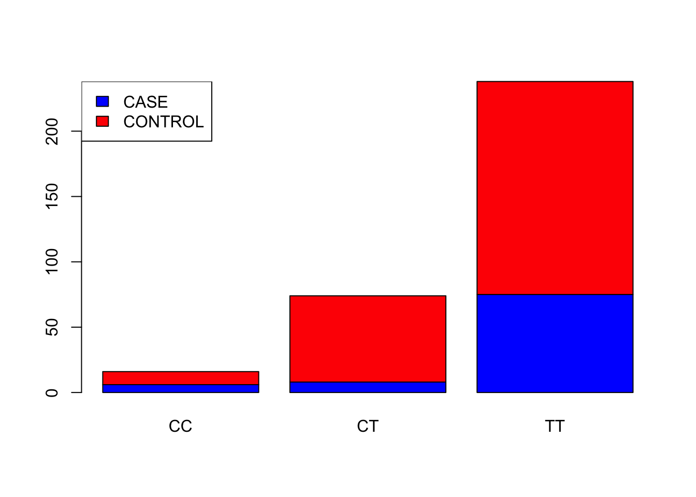

Practical 1 Key - Association Testing
Last updated: 2025-05-23
Checks: 7 0
Knit directory:
SISG2025_Association_Mapping/
This reproducible R Markdown analysis was created with workflowr (version 1.7.0). The Checks tab describes the reproducibility checks that were applied when the results were created. The Past versions tab lists the development history.
Great! Since the R Markdown file has been committed to the Git repository, you know the exact version of the code that produced these results.
Great job! The global environment was empty. Objects defined in the global environment can affect the analysis in your R Markdown file in unknown ways. For reproduciblity it’s best to always run the code in an empty environment.
The command set.seed(20230530) was run prior to running
the code in the R Markdown file. Setting a seed ensures that any results
that rely on randomness, e.g. subsampling or permutations, are
reproducible.
Great job! Recording the operating system, R version, and package versions is critical for reproducibility.
Nice! There were no cached chunks for this analysis, so you can be confident that you successfully produced the results during this run.
Great job! Using relative paths to the files within your workflowr project makes it easier to run your code on other machines.
Great! You are using Git for version control. Tracking code development and connecting the code version to the results is critical for reproducibility.
The results in this page were generated with repository version eedd236. See the Past versions tab to see a history of the changes made to the R Markdown and HTML files.
Note that you need to be careful to ensure that all relevant files for
the analysis have been committed to Git prior to generating the results
(you can use wflow_publish or
wflow_git_commit). workflowr only checks the R Markdown
file, but you know if there are other scripts or data files that it
depends on. Below is the status of the Git repository when the results
were generated:
Ignored files:
Ignored: .DS_Store
Ignored: .qodo/
Ignored: analysis/.DS_Store
Ignored: data/run_regenie.r
Ignored: data/sim_rels_geno.bed
Ignored: exe/
Ignored: gwas_plink.log
Ignored: gwas_regenie.log
Ignored: lectures/
Ignored: mk_website.R
Ignored: notes.txt
Ignored: step2_gwas_regenie.log
Ignored: test_plink.log
Ignored: tmp/
Untracked files:
Untracked: .mk_website.R.swp
Untracked: GWAS.ma
Untracked: _workflowr.yml
Untracked: causals.snplist
Untracked: ldRef.map
Untracked: ldRef.ped
Untracked: sim.config
Untracked: test_plink.Pheno.glm.linear
Unstaged changes:
Deleted: analysis/.SISGM15_prac5Solution.Rmd.swp
Note that any generated files, e.g. HTML, png, CSS, etc., are not included in this status report because it is ok for generated content to have uncommitted changes.
These are the previous versions of the repository in which changes were
made to the R Markdown
(analysis/Session01_practical_Key.Rmd) and HTML
(docs/Session01_practical_Key.html) files. If you’ve
configured a remote Git repository (see ?wflow_git_remote),
click on the hyperlinks in the table below to view the files as they
were in that past version.
| File | Version | Author | Date | Message |
|---|---|---|---|---|
| Rmd | eedd236 | Joelle Mbatchou | 2025-05-23 | update urls |
| Rmd | bec2886 | Joelle Mbatchou | 2025-05-23 | add base files |
Before you begin:
- Make sure that R is installed on your computer
- For this lab, we will use a few R libraries:
library(data.table)Case-Control Association Testing
Introduction
We will be using the LHON dataset covered in the lecture notes for this portion of the exercises. The LHON dataset is from a case-control study and includes both phenotype and genotype data for a candidate gene.
Let’s first load the LHON data file into the R session. We need to define the path to the file (if you have it downloaded on your machine, change the path to the file location).
LHON_FILE <- "https://raw.githubusercontent.com/joellembatchou/SISG2025_Association_Mapping/master/data/LHON.txt" We can now read the file
LHON <- fread(LHON_FILE, header=TRUE)Helpful suggestions for R
There are many ways to obtain summary information for a dataset. Here are some short examples:
- Get information on number of rows/columns as well as the variables present in the data set
str(LHON)Classes 'data.table' and 'data.frame': 328 obs. of 3 variables:
$ IID : chr "ID1" "ID2" "ID3" "ID4" ...
$ GENO : chr "TT" "CT" "TT" "CT" ...
$ PHENO: chr "CONTROL" "CONTROL" "CASE" "CONTROL" ...
- attr(*, ".internal.selfref")=<externalptr> - Get counts for a specific variable in the table (use
$to access a variable)
table(LHON$GENO)
CC CT TT
16 74 238 # cross tabulation for two variables
table(LHON$GENO, LHON$PHENO)
CASE CONTROL
CC 6 10
CT 8 66
TT 75 163- Functions like
as.numeric()andfactor()will be useful to convert between numeric and categorical variables.
LHON$GENO[1:5] # see the first 5 entries[1] "TT" "CT" "TT" "CT" "TT"as.numeric(factor(LHON$GENO, levels = c("CC", "CT", "TT")))[1:5] # convert to numeric specifying the order of the labels[1] 3 2 3 2 3- Note: For any R function you don’t know the input syntax, you can
get that information using
?<function_name>, e.g.?table
Exercises
Here are some things to look at:
- Examine the variables in the dataset
- How many observations? (use
strfunction) - How many cases/controls? (use
tablefunction) - What are the genotypes present in the variable
GENO? (usetablefunction)- To visualize the counts, you can use
barplot(table(LHON$GENO))
- To visualize the counts, you can use
- What is the distribution of the genotypes across cases/controls?
(use
tablefunction)
- How many observations? (use
barplot(table(LHON$GENO))
# Visualize the distribution of the genotypes across cases/controls
barplot(table(LHON$PHENO, LHON$GENO), col = c("blue","red"))
legend("topleft", legend = c("CASE", "CONTROL"), fill = c("blue","red"))
# Compute allele frequency for allele 'T'
(1 * sum(LHON$GENO == "CT") + 2 * sum(LHON$GENO == "TT")) / (2 * nrow(LHON))[1] 0.8384146- Perform a logistic regression analysis for this data with
CCas the reference genotype using theglm()function.
- First convert the
GENOvariable to a factor
GENO_factor <- factor(LHON$GENO, levels = c("CC", "CT", "TT")) # convert to numeric specifying the order of the labels- Convert the phenotype to a 0/1 variable
pheno_binary <- 1 * (LHON$PHENO == "CASE")- Check that the entries in
pheno_binarywith 1 correspond toPHENO='CASE'
table(pheno_binary, LHON$PHENO)
pheno_binary CASE CONTROL
0 0 239
1 89 0- Run logistic regression using the
glmfunction
logistic_model_LHON <- glm(pheno_binary ~ GENO_factor, family = binomial(link = "logit"))You can get information about the model fit and parameter estimates (i.e. coefficients):
summary(logistic_model_LHON)
Call:
glm(formula = pheno_binary ~ GENO_factor, family = binomial(link = "logit"))
Coefficients:
Estimate Std. Error z value Pr(>|z|)
(Intercept) -0.5108 0.5164 -0.989 0.3226
GENO_factorCT -1.5994 0.6378 -2.508 0.0122 *
GENO_factorTT -0.2654 0.5349 -0.496 0.6197
---
Signif. codes: 0 '***' 0.001 '**' 0.01 '*' 0.05 '.' 0.1 ' ' 1
(Dispersion parameter for binomial family taken to be 1)
Null deviance: 383.49 on 327 degrees of freedom
Residual deviance: 368.48 on 325 degrees of freedom
AIC: 374.48
Number of Fisher Scoring iterations: 4- Obtain odds ratios and confidence intervals (CI) for the
CTandTTgenotypes relative to theCCreference genotype. Interpret.- use the lecture notes to obtain odds ratios & CI from estimates and standard errors.
# Odds ratios for CT
exp(-1.5994)[1] 0.2020177# Odds ratios for TT
exp(-0.2654)[1] 0.7668991# Other way for all genotypes at once
exp(coef(logistic_model_LHON)) (Intercept) GENO_factorCT GENO_factorTT
0.6000000 0.2020202 0.7668712 # CI for CT
exp( -1.5994 + c(-1,1) * 1.96 * 0.6378)[1] 0.05787394 0.70517308# CI for TT
exp( -0.2654 + c(-1,1) * 1.96 * 0.5349)[1] 0.2687956 2.1880353# Using R function `confint.default()`
exp(confint.default(logistic_model_LHON, level = 0.95)) 2.5 % 97.5 %
(Intercept) 0.21806837 1.650858
GENO_factorCT 0.05787424 0.705187
GENO_factorTT 0.26878265 2.187981- Is there evidence of differences in odds of being a case for the
CTandTTgenotypes (compared toCC)?
Check the p-values.
Extra
- Perform the logistic regression analysis with an additive genotype
coding (e.g. counting the number of ‘T’ alleles).
- Hint: To convert to numerical, create a new variable with values
0/1/2 based on the genotypes (you can then use
table()function to make sure the new variable was defined correctly).
- Hint: To convert to numerical, create a new variable with values
0/1/2 based on the genotypes (you can then use
# create additive coding variable
GENO_additive_T <- 0 + 1 * (LHON$GENO == "CT") + 2 * (LHON$GENO == "TT")
# check it is correct by comparing with the original variable
table(GENO_additive_T, LHON$GENO)
GENO_additive_T CC CT TT
0 16 0 0
1 0 74 0
2 0 0 238# fit the logistic model
logistic_model_additive_LHON <- glm(pheno_binary ~ GENO_additive_T, family = binomial(link = "logit"))
summary(logistic_model_additive_LHON)
Call:
glm(formula = pheno_binary ~ GENO_additive_T, family = binomial(link = "logit"))
Coefficients:
Estimate Std. Error z value Pr(>|z|)
(Intercept) -1.8077 0.4554 -3.970 7.2e-05 ***
GENO_additive_T 0.4787 0.2505 1.911 0.0559 .
---
Signif. codes: 0 '***' 0.001 '**' 0.01 '*' 0.05 '.' 0.1 ' ' 1
(Dispersion parameter for binomial family taken to be 1)
Null deviance: 383.49 on 327 degrees of freedom
Residual deviance: 379.47 on 326 degrees of freedom
AIC: 383.47
Number of Fisher Scoring iterations: 4- Obtain odds ratios and confidence intervals. Is there evidence of an association? How does it compare with the 2-parameter model?
exp(coef(logistic_model_additive_LHON)) (Intercept) GENO_additive_T
0.1640322 1.6140439 exp(confint.default(logistic_model_additive_LHON, level = 0.95)) 2.5 % 97.5 %
(Intercept) 0.06718883 0.4004616
GENO_additive_T 0.98792490 2.6369796Association Testing with Quantitative Traits
Introduction
We will be using the Blood Pressure dataset for this portion of the exercises. This dataset contains diastolic and systolic blood pressure measurements for 1000 individuals, and genotype data at 11 SNPs in a candidate gene for blood pressure. Covariates such as gender (sex) and body mass index (bmi) are included as well.
Let’s first load the file into R. We need to define the path to the file (if you have it downloaded on your machine, change the path to the file location).
BP_FILE <- "https://raw.githubusercontent.com/joellembatchou/SISG2025_Association_Mapping/master/data/bpdata.csv" Use the following command to read it into R:
BP <- fread(BP_FILE, header=TRUE)- Get a snippet of the data:
head(BP, 2) V1 sex sbp dbp snp1 snp2 snp3 snp4 snp5 snp6 snp7 snp8 snp9 snp10 snp11
1: 1 FEMALE 171 89 CC TT TT TT CC GG AA TT TT CC TT
2: 2 MALE 160 99 TT TT CC <NA> CC AG AT CC CT CC CT
bmi
1: 25
2: 35Exercises
Here are some things to try:
- Perform a linear regression of systolic blood pressure
(
sbp) onSNP3using thelm()function.
linear_model_BP <- lm(sbp ~ snp3, data = BP)You can get information about the model fit and parameter estimates (i.e. coefficients):
summary(linear_model_BP)
Call:
lm(formula = sbp ~ snp3, data = BP)
Residuals:
Min 1Q Median 3Q Max
-55.931 -12.428 -0.931 10.572 60.572
Coefficients:
Estimate Std. Error t value Pr(>|t|)
(Intercept) 140.4283 0.7361 190.773 <2e-16 ***
snp3TC 2.5026 1.2840 1.949 0.0516 .
snp3TT 5.2859 3.1868 1.659 0.0975 .
---
Signif. codes: 0 '***' 0.001 '**' 0.01 '*' 0.05 '.' 0.1 ' ' 1
Residual standard error: 18.34 on 957 degrees of freedom
(40 observations deleted due to missingness)
Multiple R-squared: 0.006019, Adjusted R-squared: 0.003942
F-statistic: 2.898 on 2 and 957 DF, p-value: 0.05563- Is there any evidence of an effect of the SNP on systolic blood pressure?
Check the p-values.
- Provide a plot illustrating the relationship between sbp and the three genotypes at SNP3.
- How does it compare with the linear model fitted in question (1)?
# show the mean in the boxplots (by default, only the median is shown)
with(BP, {
# Draw the boxplots
boxplot(sbp ~ snp3)
# Calculate means
means <- tapply(sbp, snp3, mean)
# Add means to the boxplots
points(x = 1:length(means), y = means, col = "red", pch = 18)
})
By default, the 2-parameter model is used since the SNP is stored in the data as categorical. Contrast the parameter estimates, p-values and confidence intervals obtained between this model and using:
- additive (linear) model (counting the T allele)
- dominant model
- recessive model
Hint: for each case, generate the appropriate allele coding
variable and pass it to the lm() function. For example with
additive coding:
SNP3_additive <- 0 + 1 * (BP$snp3 == "TC") + 2 * (BP$snp3 == "TT")
linear_model_BP_additive <- lm(sbp ~ SNP3_additive, data = BP)
summary(linear_model_BP_additive)
Call:
lm(formula = sbp ~ SNP3_additive, data = BP)
Residuals:
Min 1Q Median 3Q Max
-55.974 -12.418 -0.974 10.582 60.582
Coefficients:
Estimate Std. Error t value Pr(>|t|)
(Intercept) 140.4179 0.7219 194.506 <2e-16 ***
SNP3_additive 2.5556 1.0615 2.407 0.0163 *
---
Signif. codes: 0 '***' 0.001 '**' 0.01 '*' 0.05 '.' 0.1 ' ' 1
Residual standard error: 18.33 on 958 degrees of freedom
(40 observations deleted due to missingness)
Multiple R-squared: 0.006014, Adjusted R-squared: 0.004976
F-statistic: 5.796 on 1 and 958 DF, p-value: 0.01625SNP3_dominant <- 0 + 1 * (BP$snp3 == "TC") + 1 * (BP$snp3 == "TT")
linear_model_BP_dominant <- lm(sbp ~ SNP3_dominant, data = BP)
summary(linear_model_BP_dominant)
Call:
lm(formula = sbp ~ SNP3_dominant, data = BP)
Residuals:
Min 1Q Median 3Q Max
-56.218 -12.428 -0.823 10.572 60.572
Coefficients:
Estimate Std. Error t value Pr(>|t|)
(Intercept) 140.428 0.736 190.801 <2e-16 ***
SNP3_dominant 2.790 1.238 2.253 0.0245 *
---
Signif. codes: 0 '***' 0.001 '**' 0.01 '*' 0.05 '.' 0.1 ' ' 1
Residual standard error: 18.34 on 958 degrees of freedom
(40 observations deleted due to missingness)
Multiple R-squared: 0.005269, Adjusted R-squared: 0.00423
F-statistic: 5.074 on 1 and 958 DF, p-value: 0.02451SNP3_recessive <- 0 + 0 * (BP$snp3 == "TC") + 1 * (BP$snp3 == "TT")
linear_model_BP_recessive <- lm(sbp ~ SNP3_recessive, data = BP)
summary(linear_model_BP_recessive)
Call:
lm(formula = sbp ~ SNP3_recessive, data = BP)
Residuals:
Min 1Q Median 3Q Max
-54.251 -12.501 -1.251 10.749 59.749
Coefficients:
Estimate Std. Error t value Pr(>|t|)
(Intercept) 141.251 0.604 233.854 <2e-16 ***
SNP3_recessive 4.463 3.163 1.411 0.159
---
Signif. codes: 0 '***' 0.001 '**' 0.01 '*' 0.05 '.' 0.1 ' ' 1
Residual standard error: 18.37 on 958 degrees of freedom
(40 observations deleted due to missingness)
Multiple R-squared: 0.002074, Adjusted R-squared: 0.001032
F-statistic: 1.991 on 1 and 958 DF, p-value: 0.1586For question 5 and 6 below, R also has a ‘formula’ syntax, frequently
used when specifying regression models with many predictors. To regress
an outcome y on several covariates, the syntax is:
lm(y ~ covariate1 + covariate2 + covariate3)- Now redo the linear regression analysis of
sbpfrom question 4 for the additive model, but this time adjust forsexandbmi. Do the results change?
linear_model_BP_cov_adj <- lm(sbp ~ sex + bmi + SNP3_additive, data = BP)
summary(linear_model_BP_cov_adj)
Call:
lm(formula = sbp ~ sex + bmi + SNP3_additive, data = BP)
Residuals:
Min 1Q Median 3Q Max
-58.83 -12.81 -0.82 11.58 57.80
Coefficients:
Estimate Std. Error t value Pr(>|t|)
(Intercept) 145.85380 3.00271 48.574 < 2e-16 ***
sexMALE -4.77580 1.17642 -4.060 5.32e-05 ***
bmi -0.09837 0.09481 -1.038 0.2997
SNP3_additive 2.63566 1.05434 2.500 0.0126 *
---
Signif. codes: 0 '***' 0.001 '**' 0.01 '*' 0.05 '.' 0.1 ' ' 1
Residual standard error: 18.19 on 955 degrees of freedom
(41 observations deleted due to missingness)
Multiple R-squared: 0.02402, Adjusted R-squared: 0.02096
F-statistic: 7.836 on 3 and 955 DF, p-value: 3.608e-05Extra
- What proportion of the variance of
sbpis explained by all 11 SNPs combined using categorical coding?
- Use the
summary()function to see the model results (the proportion of variance is the “Multiple R-squared” quantity)
linear_model_BP_all_snps <- lm(sbp ~ snp1+snp2+snp3+snp4+snp5+snp6+snp7+snp8+snp9+snp10+snp11, data = BP)
summary(linear_model_BP_all_snps)
Call:
lm(formula = sbp ~ snp1 + snp2 + snp3 + snp4 + snp5 + snp6 +
snp7 + snp8 + snp9 + snp10 + snp11, data = BP)
Residuals:
Min 1Q Median 3Q Max
-50.722 -11.967 -0.703 11.021 61.704
Coefficients:
Estimate Std. Error t value Pr(>|t|)
(Intercept) 133.1726 12.4033 10.737 <2e-16 ***
snp1CT -1.7048 4.5991 -0.371 0.711
snp1TT 1.9319 8.2839 0.233 0.816
snp2AT 0.7347 5.5923 0.131 0.896
snp2TT -0.5118 6.9317 -0.074 0.941
snp3TC 4.7672 5.0211 0.949 0.343
snp3TT 6.6913 9.7904 0.683 0.495
snp4CT -0.4778 3.5501 -0.135 0.893
snp4TT 2.3431 6.4874 0.361 0.718
snp5CT 1.1896 3.0462 0.391 0.696
snp5TT -2.2787 7.5490 -0.302 0.763
snp6AG -3.0266 2.0697 -1.462 0.144
snp6GG 2.1230 4.6650 0.455 0.649
snp7AT -3.0873 3.9148 -0.789 0.431
snp7TT -2.6319 4.3146 -0.610 0.542
snp8CT -1.5509 3.6318 -0.427 0.669
snp8TT -2.5507 7.3228 -0.348 0.728
snp9CT 6.0693 7.6170 0.797 0.426
snp9TT 4.7385 7.4517 0.636 0.525
snp10CT 1.4330 1.6466 0.870 0.384
snp10TT 1.9810 2.0699 0.957 0.339
snp11CT 4.8005 6.5175 0.737 0.462
snp11TT 4.0226 9.2775 0.434 0.665
---
Signif. codes: 0 '***' 0.001 '**' 0.01 '*' 0.05 '.' 0.1 ' ' 1
Residual standard error: 18.2 on 707 degrees of freedom
(270 observations deleted due to missingness)
Multiple R-squared: 0.02633, Adjusted R-squared: -0.003965
F-statistic: 0.8691 on 22 and 707 DF, p-value: 0.6372summary(linear_model_BP_all_snps)$r.sq[1] 0.02633265- How would it differ if an additive coding is used for the 11 SNPs?
- use
unique()to check the genotypes for each SNP, e.g.unique(BP$snp1) - count the T allele (or A allele if applicable)
- use
unique(BP$snp1)[1] "CC" "TT" "CT" NA SNP1_additive <- 0 + 1 * (BP$snp1 == "CT") + 2 * (BP$snp1 == "TT")
unique(BP$snp2)[1] "TT" "AT" "AA" NA SNP2_additive <- 0 + 1 * (BP$snp2 == "AT") + 2 * (BP$snp2 == "TT")
unique(BP$snp3)[1] "TT" "CC" "TC" NA SNP3_additive <- 0 + 1 * (BP$snp3 == "TC") + 2 * (BP$snp3 == "TT")
unique(BP$snp4)[1] "TT" NA "CT" "CC"SNP4_additive <- 0 + 1 * (BP$snp4 == "CT") + 2 * (BP$snp4 == "TT")
unique(BP$snp5)[1] "CC" NA "CT" "TT"SNP5_additive <- 0 + 1 * (BP$snp5 == "CT") + 2 * (BP$snp5 == "TT")
unique(BP$snp6)[1] "GG" "AG" "AA" NA SNP6_additive <- 0 + 1 * (BP$snp6 == "AG") + 2 * (BP$snp6 == "AA")
unique(BP$snp7)[1] "AA" "AT" "TT" NA SNP7_additive <- 0 + 1 * (BP$snp7 == "AT") + 2 * (BP$snp7 == "AA")
unique(BP$snp8)[1] "TT" "CC" "CT" NA SNP8_additive <- 0 + 1 * (BP$snp8 == "CT") + 2 * (BP$snp8 == "TT")
unique(BP$snp9)[1] "TT" "CT" NA "CC"SNP9_additive <- 0 + 1 * (BP$snp9 == "CT") + 2 * (BP$snp9 == "TT")
unique(BP$snp10)[1] "CC" "CT" "TT" NA SNP10_additive <- 0 + 1 * (BP$snp10 == "CT") + 2 * (BP$snp10 == "TT")
unique(BP$snp11)[1] "TT" "CT" "CC" NA SNP11_additive <- 0 + 1 * (BP$snp11 == "CT") + 2 * (BP$snp11 == "TT")
linear_model_BP_all_snps_additive <- lm(sbp ~ SNP1_additive+SNP2_additive+SNP3_additive+SNP4_additive+SNP5_additive+SNP6_additive+SNP7_additive+SNP8_additive+SNP9_additive+SNP10_additive+SNP11_additive, data = BP)
summary(linear_model_BP_all_snps_additive)
Call:
lm(formula = sbp ~ SNP1_additive + SNP2_additive + SNP3_additive +
SNP4_additive + SNP5_additive + SNP6_additive + SNP7_additive +
SNP8_additive + SNP9_additive + SNP10_additive + SNP11_additive,
data = BP)
Residuals:
Min 1Q Median 3Q Max
-53.638 -12.849 -0.522 11.032 61.683
Coefficients:
Estimate Std. Error t value Pr(>|t|)
(Intercept) 134.43839 9.42384 14.266 <2e-16 ***
SNP1_additive 1.88456 4.03838 0.467 0.641
SNP2_additive -1.95639 2.96674 -0.659 0.510
SNP3_additive 4.60730 4.65652 0.989 0.323
SNP4_additive 0.05946 3.11138 0.019 0.985
SNP5_additive -0.26494 2.58719 -0.102 0.918
SNP6_additive 1.17284 1.80185 0.651 0.515
SNP7_additive 0.28939 1.78362 0.162 0.871
SNP8_additive 0.70702 2.78030 0.254 0.799
SNP9_additive 2.17197 2.54774 0.853 0.394
SNP10_additive 0.60685 1.01229 0.599 0.549
SNP11_additive -0.39009 4.15347 -0.094 0.925
---
Signif. codes: 0 '***' 0.001 '**' 0.01 '*' 0.05 '.' 0.1 ' ' 1
Residual standard error: 18.17 on 718 degrees of freedom
(270 observations deleted due to missingness)
Multiple R-squared: 0.01418, Adjusted R-squared: -0.0009268
F-statistic: 0.9386 on 11 and 718 DF, p-value: 0.5022summary(linear_model_BP_all_snps_additive)$r.sq[1] 0.01417639
sessionInfo()R version 4.3.0 (2023-04-21)
Platform: aarch64-apple-darwin20 (64-bit)
Running under: macOS 14.7.4
Matrix products: default
BLAS: /Library/Frameworks/R.framework/Versions/4.3-arm64/Resources/lib/libRblas.0.dylib
LAPACK: /Library/Frameworks/R.framework/Versions/4.3-arm64/Resources/lib/libRlapack.dylib; LAPACK version 3.11.0
locale:
[1] en_US.UTF-8/en_US.UTF-8/en_US.UTF-8/C/en_US.UTF-8/en_US.UTF-8
time zone: America/Chicago
tzcode source: internal
attached base packages:
[1] stats graphics grDevices utils datasets methods base
other attached packages:
[1] data.table_1.14.8
loaded via a namespace (and not attached):
[1] vctrs_0.6.2 cli_3.6.1 knitr_1.43 rlang_1.1.1
[5] xfun_0.39 highr_0.10 stringi_1.7.12 promises_1.2.0.1
[9] jsonlite_1.8.5 workflowr_1.7.0 glue_1.6.2 rprojroot_2.0.3
[13] git2r_0.32.0 htmltools_0.5.5 httpuv_1.6.11 sass_0.4.6
[17] fansi_1.0.4 rmarkdown_2.22 evaluate_0.21 jquerylib_0.1.4
[21] tibble_3.2.1 fastmap_1.1.1 yaml_2.3.7 lifecycle_1.0.3
[25] whisker_0.4.1 stringr_1.5.0 compiler_4.3.0 fs_1.6.2
[29] Rcpp_1.0.10 pkgconfig_2.0.3 rstudioapi_0.14 later_1.3.1
[33] digest_0.6.31 R6_2.5.1 utf8_1.2.3 curl_5.0.1
[37] pillar_1.9.0 magrittr_2.0.3 bslib_0.5.0 tools_4.3.0
[41] cachem_1.0.8